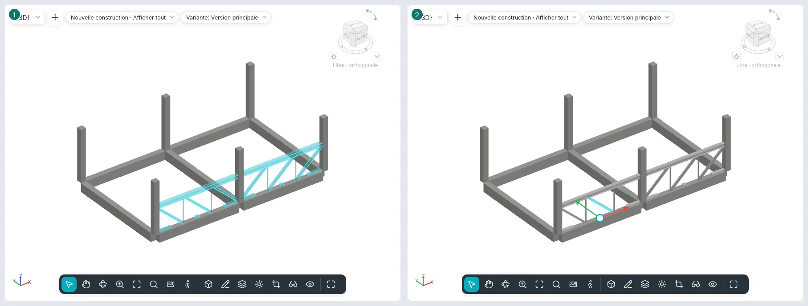
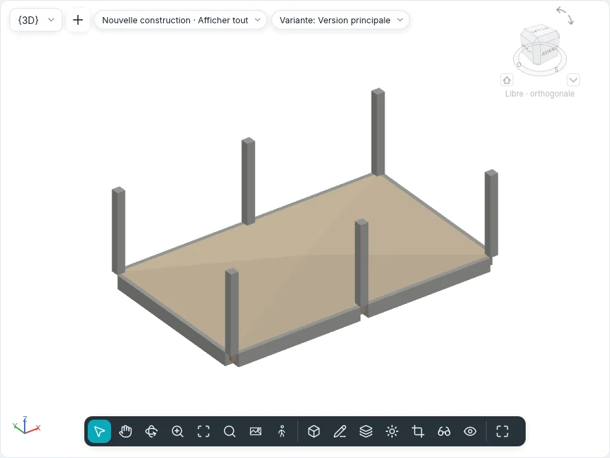
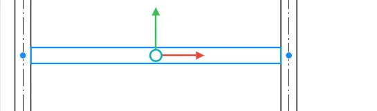
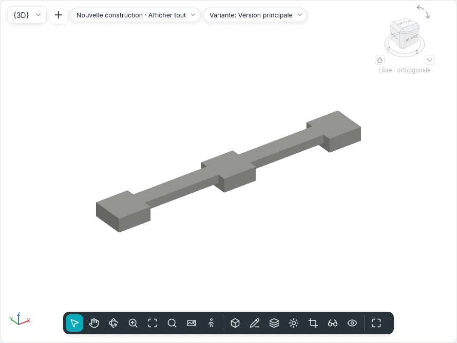
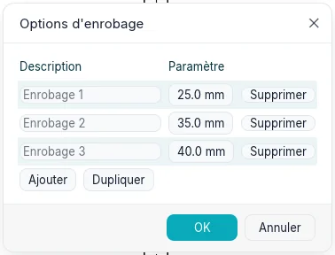
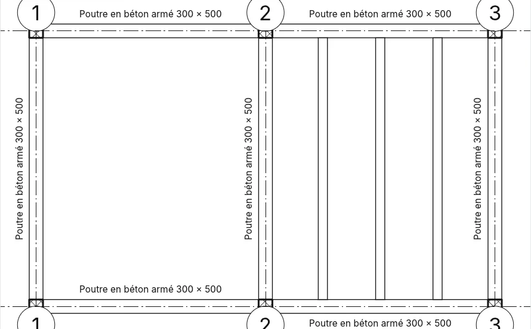

Structure et fondations
L'onglet Structure (dans le style BIMopen : Créer ▸ Structure) rassemble les éléments qui portent le bâtiment : poutres, contreventements, trames de poutres, treillis, murs et planchers porteurs, poteaux porteurs, semelles isolées, semelles filantes et radiers. Les poutres, les contreventements et les barres des treillis forment une seule catégorie, Ossature structurelle ; les semelles isolées, les semelles filantes et les radiers sont des Fondations structurelles. Les mêmes outils fonctionnent dans les plans, les coupes, les élévations et les vues 3D, là où la vue le permet.
Types d'ossature structurelle
Les types de poutre et de contreventement sont des sections paramétriques de BIMopen, comme celles des poteaux porteurs. Forme de la section choisit la forme : Rectangulaire (béton ou bois), Circulaire, Profilé en I (aussi avec des ailes inégales et des ailes inclinées), Profilé creux rectangulaire, Profilé creux circulaire, Angulaire, Profilé en C (aussi avec bord tombé) et Profilé en T. Paramètres du type n'affiche que les cotes de la forme choisie et calcule en lecture seule les propriétés d'Analyse structurelle : aire, périmètre à peindre, poids nominal (d'après la masse volumique du matériau), moments d'inertie, modules élastiques et plastiques, constantes de torsion et de gauchissement, aires de cisaillement et angle des axes principaux. Clé de nom de section conserve le nom du profilé du commerce.
Un nouveau projet comprend des poutres en béton armé, les profilés IPE, HEA, HEB, UPN, des cornières, des profilés en T, des profilés creux et des poutres en bois lamellé-collé.
Poutre
Structure ▸ Poutre ouvre la carte Placer une poutre. Deux clics créent une poutre : les extrémités s'accrochent au centre des poteaux porteurs, à l'axe des murs porteurs, aux extrémités et à la ligne d'autres poutres et aux intersections des quadrillages, et la barre d'état indique à quoi. La barre des options comprend :
| Option | Ce qu'elle fait |
|---|---|
| Plan de placement | Le niveau de la vue, sur lequel la poutre est posée |
| Utilisation structurelle | |
| Accrochage 3D | Les extrémités s'accrochent aux éléments structurels hors du plan de construction : une poutre inclinée |
| Enchaîner | La fin d'une poutre est le début de la suivante ; Esc termine la chaîne |
| Étiqueter lors du placement | Chaque poutre est créée avec son étiquette |
Multiple ▸ Sur les quadrillages : cliquez sur les quadrillages puis Fin (ou Enter) ; sur chaque quadrillage naît une poutre par travée entre les appuis qui le croisent. Un mur situé sur le quadrillage ne reçoit pas de poutres ; les poutres déjà présentes ne sont pas doublées.
Dans une coupe ou une élévation, la poutre se dessine dans le plan de la vue, avec ses extrémités sur les éléments structurels cliqués ; en 3D sur le niveau sous le curseur, ou avec Accrochage 3D sur l'élément.
Propriétés de la poutre
| Groupe | Propriétés |
|---|---|
| Contraintes | Niveau de référence, Plan de construction, Décalage du niveau de début et Décalage du niveau de fin (une poutre inclinée), Orientation (Normale, Horizontale), Rotation de la section |
| Position géométrique | Prolongement de début/Prolongement de fin (extrémités libres), Retrait de jonction de début/Retrait de jonction de fin (extrémités jointes, acier et bois), Justification YZ (Uniforme ou Indépendant), Justification Y/Justification Z avec leur Valeur de décalage, aussi pour le début et la fin |
| Matériaux et finitions | Matériau structurel |
| Structure | Utilisation structurelle, Position du symbole de barre, Type d'attache de début/de fin, Distance d'attache de début/de fin et poteau de référence (supérieur ou inférieur) pour chaque extrémité, Connexion de début/Connexion de fin (Cadre à moment, Moment en porte-à-faux), Contre-flèche, Nombre de montants, Poutre en appui au début/à la fin sur un mur porteur, Poids maximal, Poids exact, Surface peinte |
| Cotes | Longueur du système, Longueur de coupe, Volume, Élévation en haut et Élévation en bas («Varie» sur une poutre inclinée) |
| Analyse structurelle | Relâchement de début/Relâchement de fin (Encastré, Articulé, Moment fléchissant, Défini par l'utilisateur avec les six liaisons), Analyser comme |
Une poutre sélectionnée offre Inverser les extrémités et, pour chaque extrémité, Interdire la jonction.
Comment elle est dessinée
- Faible : une ligne, avec le style de ligne de son utilisation (Styles par catégorie ▸ Ossature structurelle ▸ Poutre maîtresse, Solive, Panne…), écartée des poteaux et des poutres qu'elle relie de la Distance du symbole de coupe. En coupe et en élévation les poutres sont aussi des lignes, avec les symboles de moment.
- Moyen et Élevé : le contour de la section. Dans un plan dont la Discipline est «Structure», les poutres couvertes par un plancher sont en tirets ; dans un plan «Architecture» elles ne sont pas visibles.
- En coupe, la poutre est coupée avec le motif de son matériau.
Jonctions
Une poutre s'arrête à la face du poteau et du mur porteur sur lesquels elle repose (jamais à un mur non porteur) ; entre poutres la jonction est en T (la poutre qui passe reste entière) ou d'angle entre deux poutres du même type dans le même plan. Le béton devient une seule masse : le poteau l'emporte sur la poutre, les planchers et les murs gardent leur forme, et une poutre sous un plancher en béton s'arrête à sa sous-face.
Structure ▸ Ossature ▸ Jonctions poutre/poteau affiche une flèche à chaque extrémité jointe : du côté de la jonction, cette poutre est coupée ; un clic l'inverse. La barre des options filtre par matériau (Acier, Bois, Béton préfabriqué, Autre).
Contreventement
Structure ▸ Contreventement :
- dans une Élévation de charpente (ou dans une coupe), deux clics sur des éléments structurels, par exemple le pied d'un poteau et une poutre ;
- en plan, avec Niveau de début, Décaler, Niveau de fin, Décaler de la barre des options ;
- en 3D, sur les points des éléments cliqués.
Une extrémité posée sur une poutre reste attachée à un Rapport (de 0 à 1) ou à une Distance le long de celle-ci, depuis le début ou la fin : si la poutre se déplace ou s'allonge, le contreventement la suit. Utilisation structurelle : Contreventement vertical, Jambe de force, Barre de treillis, Autre.
Symboles en plan et Paramètres structurels
Structure ▸ Ossature ▸ Paramètres structurels règle, sur le papier :
- la Distance du symbole de coupe des contreventements, des poutres et treillis, des poteaux ;
- les Symboles de contreventement : Ligne parallèle (avec son décalage) ou Ligne avec angle, Afficher le contreventement au-dessus et Afficher le contreventement au-dessous (aussi en tirets), Symbole de jambe de force ;
- les Symboles de connexion des poutres et des contreventements.
Les symboles sont visibles au niveau de détail Faible.
Trame de poutres
Structure ▸ Trame de poutres remplit une travée de poutres parallèles :
- Trame de poutres automatique : un clic dans une travée fermée par des poutres ou des murs porteurs ;
- Esquisser la trame de poutres : le contour en mode esquisse (Créer le contour de la trame) avec Choisir les appuis (le contour reste lié aux poutres et aux murs cliqués, et le premier donne la direction), Ligne, Rectangle, Choisir des lignes et Direction de la poutre. Une boucle intérieure est une ouverture.
Règle de disposition : Distance fixe, Nombre fixe, Espacement maximal, Espacement libre ; avec la première et la dernière, Justification (Début, Fin, Centre, Ligne de direction). Type de poutre, Élévation et Étiqueter lors du placement (une étiquette de la trame ou une par poutre) complètent les options.
Les poutres suivent les appuis quand ils se déplacent. Une trame sélectionnée offre Réinitialiser le système (les poutres modifiées reviennent à la trame) et Supprimer la trame (la trame disparaît, les poutres restent).
Les règles de disposition espacent les poutres comme Réseau espace ses copies : Nombre fixe comme Dernier, Distance fixe comme 2° à partir de la Justification ; avec Espacement libre l'écart se mesure entre les faces, et une poutre d'un type plus grand écarte ses voisines. 3D dans la barre des options rend le système non plan : les extrémités des poutres montent jusqu'aux supports qui définissent la pente (les poutres toujours, les murs avec Définit l'inclinaison ou Murs à inclinaison définie). Modifier le contour rouvre l'esquisse ; Direction de la poutre se dessine ou se choisit avec Choisir des lignes. Une poutre supprimée à la main reste supprimée jusqu'à Réinitialiser le système. Hors d'une travée fermée, Trame de poutres automatique ouvre l'esquisse du contour.


Un système de poutres copié, symétrisé ou collé s'associe aux poutres et aux murs porteurs sur lesquels tombent ses bords au nouvel emplacement ; si un bord ne trouve aucun appui, la commande avertit, et Modifier le contour ▸ Choisir les appuis l'associe à nouveau. Ne le copiez qu'entre des travées de même forme et de mêmes appuis.
Les poutres courbes et les murs porteurs courbes ferment aussi une travée pour un système de poutres automatique, mais la direction des poutres vient toujours d'un appui droit. Un système de poutres esquissé sur plus d'une travée est tout de même créé, avec un avertissement : les poutres et murs qui le traversent ne le divisent pas, il vaut donc mieux un système par travée.
Treillis
Structure ▸ Treillis : deux clics en plan étendent le schéma du type (Pratt, Howe, Warren, Warren avec montants, Fink) sur la portée. Les membrures sont des poutres, les barres de treillis sont des contreventements, chacune du type de son groupe (Membrures supérieures, Montants, Diagonales, Membrures inférieures). Les propriétés comprennent Hauteur du treillis, Membrure porteuse, Largeur maximale du panneau, Nombre de panneaux et la rotation.
Un treillis sélectionné offre Attacher haut/bas (la membrure suit la face d'un toit ou d'un plancher porteur ; avec Shift la membrure inférieure), Détacher haut/bas, Réinitialiser le treillis et Supprimer le treillis (les barres restent des poutres et des contreventements).
Modifier le profil ouvre une coupe ou une élévation parallèle au treillis (si la vue ouverte ne l'est pas, Atteindre la vue demande laquelle) avec les lignes des membrures en mode esquisse : les lignes au-dessus du milieu forment la membrure supérieure, les autres la membrure inférieure, et les barres d'âme les suivent. Réinitialiser le profil ramène les membrures à la ligne du gabarit. Dans une vue 3D, les lignes se dessinent directement dans le plan du treillis, sans changer de vue.
Avec Choisir des lignes, le treillis se place le long d'une poutre, d'un mur ou d'une grille. Un clic sur une barre sélectionne tout le treillis ; Tab passe à la barre seule. Une membrure attachée suit la face de l'hôte sur toute la portée ; si la membrure porteuse est attachée, l'autre garde la Hauteur du treillis à partir d'elle, et le profil dessiné reste et revient avec Détacher haut/bas. Justification verticale porteuse, Décalage non porteur, Orientation de l'âme (Orthogonale : les montants d'équerre avec la membrure porteuse) et Angle de rotation (le plan du treillis tourne autour de la ligne d'emplacement) modifient les barres. Une barre supprimée à la main reste supprimée jusqu'à Réinitialiser le treillis ; les barres se coupent seulement dans Paramètres structurels. Les nouvelles dispositions dessinées dans leur propre composant viendront avec l'éditeur de composants.

Avec Les barres de treillis ont des symboles de coupe dans le type de treillis, au niveau de détail faible les montants s'arrêtent avant les membrures, à la Distance du symbole de coupe des contreventements des Paramètres structurels.
Mur porteur et plancher porteur
Mur porteur est l'outil Mur avec les mêmes types et la même barre des options : le mur est créé Porteur. Chaque mur a Structure et Utilisation structurelle (Non porteur, Porteur, Mur de cisaillement, Structurel combiné).
Plancher porteur est le sol avec Structure coché. Dans l'esquisse, Sens de portée dessine le sens de sa portée ; à la fin, le Symbole de sens de portée est créé au centre du plancher. Annotations ▸ Sens de portée le replace (avec Placement automatique au centre) ; sélectionné, il se fait pivoter, et Aligner perpendiculairement le rend perpendiculaire à un bord, à une poutre ou à un quadrillage.
Modification de la forme
Un sol sélectionné (porteur, un radier ou tout autre sol) offre le groupe Modification de la forme :
- Modifier les sous-éléments : cliquez un angle ou un point, puis tapez son Élévation dans la barre des options ; Del supprime le point.
- Ajouter un point : un point dans le sol à l'élévation donnée ; avec Relative, elle s'ajoute à la hauteur de la surface à cet endroit.
- Ajouter une ligne de scission : deux clics ; la surface se plie le long de la ligne.
- Choisir les supports : cliquez une poutre sous le sol ; une ligne de scission suit la poutre, à sa face supérieure.
- Réinitialiser la forme : supprime points et lignes ; le sol redevient plan (ou garde sa pente).
Le dessus devient la surface triangulée passant par ces points ; toute la dalle la suit et garde son épaisseur. Élévation au sommet et Élévation à la base affichent alors Variable.

Fondations
| Outil | Fonctionnement |
|---|---|
| Semelle isolée | Un clic en plan ou en 3D (barre d'espace : pivoter), ou Sur les quadrillages ou Sous les poteaux puis Fin. La face supérieure est au niveau plus le Décalage de hauteur par rapport au niveau ; le poteau au-dessus s'appuie sur la semelle. Déplacer avec les quadrillages la lie aux quadrillages |
| Semelle filante | Un clic sur un mur porteur : la semelle court sous sa base et le suit. Porteur : Largeur et Excentricité ; Soutènement : Largeur du côté extérieur et Largeur du côté intérieur. Elle s'interrompt sous les portes et les fenêtres qui touchent la base, sauf avec Ne pas interrompre aux insertions ; aux extrémités libres elle dépasse de la Longueur par défaut du prolongement de fin |
| Radier | Le contour en mode esquisse (Créer le contour du radier), comme un sol : il se trouve sous son niveau, abaissé de l'épaisseur de ses couches. Utilisation structurelle : Fondation ou Dalle de fondation |
Une semelle filante sélectionnée, les cercles pleins à ses extrémités l'allongent ou la raccourcissent le long du mur, avec accrochage aux références proches ; les cercles aux extrémités d'une poutre ou d'un contreventement font de même. Sur les poutres en acier, béton préfabriqué et bois, les flèches au-delà des extrémités changent Prolongement de début/fin à une extrémité libre et Retrait de jonction de début/fin à une extrémité jointe. Les semelles isolées et filantes en béton qui se touchent forment une seule masse : la semelle isolée garde sa forme et coupe la semelle filante (de deux semelles isolées, la plus ancienne coupe l'autre), et aucune ligne n'est dessinée entre elles en plan.


Enrobage des armatures
Béton armé ▸ Options d'enrobage liste les enrobages du projet, chacun avec un nom et une distance : Ajouter, Dupliquer, Supprimer. Les éléments qui utilisaient un enrobage supprimé prennent le premier. Murs porteurs, poteaux, poutres et contreventements en béton, sols porteurs, radiers, semelles isolées et filantes choisissent leur enrobage dans Propriétés : Enrobage d'armature - Face supérieure, Enrobage d'armature - Face inférieure et Enrobage d'armature - Autres faces (sur les murs Enrobage - Face extérieure, Enrobage - Face intérieure et Enrobage d'armature - Autres faces).

Vues, étiquettes, nomenclatures et IFC
- Discipline d'une vue : Architecture ou Structure. La seconde masque les murs non porteurs et met en tirets ce que les planchers couvrent.
- Annotations ▸ Étiquettes de poutres : étiquettes d'ossature et élévations sur toutes les poutres du plan (ou sur celles sélectionnées) en six positions, dessus et dessous, au début, au milieu et à la fin ; Afficher l'élévation choisit haut, bas, les deux ou réelle.
- L'étiquette d'une poutre se lit le long de la poutre et se place à côté, du côté où elle ne couvre aucune autre poutre (au-dessus si les deux sont libres) ; elle se fait glisser comme toute étiquette. Dans Étiquettes de poutres ▸ Paramètres, Décalage horizontal aux extrémités rapproche du milieu les positions de début et de fin, et Décalage vertical éloigne les annotations du flanc de la poutre.
- Nomenclature/Quantités a les catégories Ossature structurelle, Trames de poutres, Treillis et Fondations structurelles, avec tous les paramètres comme champs.
- En IFC, les poutres maîtresses, solives et pannes sont exportées comme
IfcBeam, les contreventements et les barres commeIfcMember, les treillis commeIfcElementAssembly, les semelles isolées et filantes commeIfcFooting, le radier commeIfcSlabde base ; les murs et planchers porteurs portentLoadBearing.

Depuis la ligne de commande
| Commande | Ce qu'elle fait |
|---|---|
beam |
Des poutres par deux points, enchaînées, en arc ou sur des quadrillages |
brace |
Un contreventement entre deux points |
beamsystem, beamsystemedit |
Une trame automatique ou à partir d'un contour ; la réinitialiser ou la supprimer |
truss, trussedit |
Un treillis ; l'attacher, le détacher, le réinitialiser ou le supprimer |
pad, strip |
Des semelles isolées (en un point, sur les quadrillages, sous les poteaux), des semelles filantes |
spansymbol, spanalign |
Le symbole de sens de portée ; l'aligner |
beamjoin, structuralsettings, beamannotations |
Les jonctions, les paramètres structurels, les étiquettes de poutres |
floorshape |
La modification de la forme d'un sol : points, lignes de scission, supports, réinitialiser |
covers |
Paramètres d'enrobage |